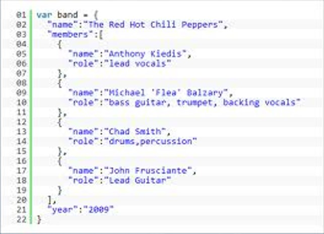

JavaScript ეს არის ობიექტზე ორიენტირებული დაპროგრამების საშუალება,
რომელიც გამოიყენება ვებ გვერდების აწყობის პროცესში, ვებ რესურსები 99,9 %-ში გამოყენებულია
JavaScript-ის კოდი. JavaScript გამოიყენება ვებ გვერდის გაცოცხლებისათვის,
მისი საშუალებით ვებ გვერდი გაცილებით დახვეწილი და ლამაზია.
JavaScript - ის კოდი პირდაპირ იდგმება HTML კოდში, რაც JavaScript-ის ერთ-ერთი მნიშვნელოვანი უპირატესობა და რის გამოც ამ ენას იყენებენ ვებ გვერდების შენების პროცესში
აქვე მინდა ავღნიშნოთ რომ JavaScript დაპროგრამების ტექნოლოგია აბსოლიტურად განსხვავდება Java დაპროგრამების ტექნოლოგიისაგან, ხშირად ამ ორი დაპროგრამების საშუალებას ურევენ ერთმანეთში. Java შეიძლება ითქვას რომ შედარებით მაღალი დონის დაპროგრამების საშუალებაა, თუმც JavaScript-ის განვითარებამ მიაღწია იმ დონეს, რომ თამამად შეიძლება ვუწოდოთ მას Java-ს უმცროსი ძმა.
copyright © 2020 Site Created By: Bakari Zhordania